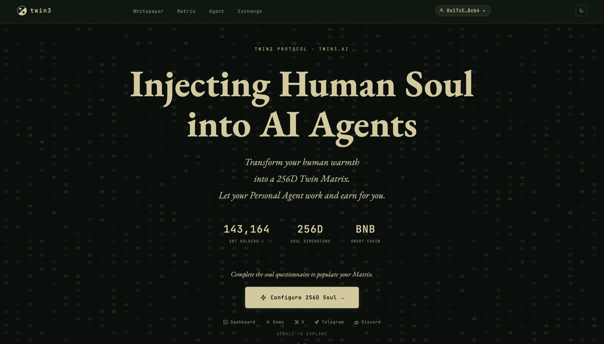
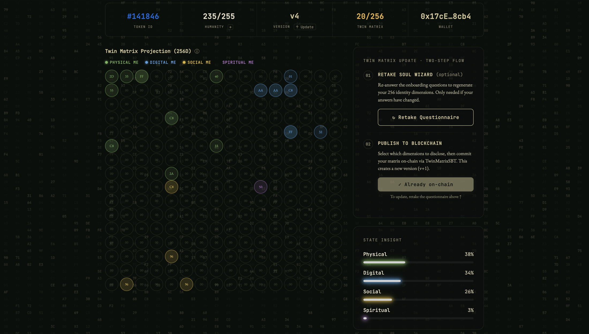
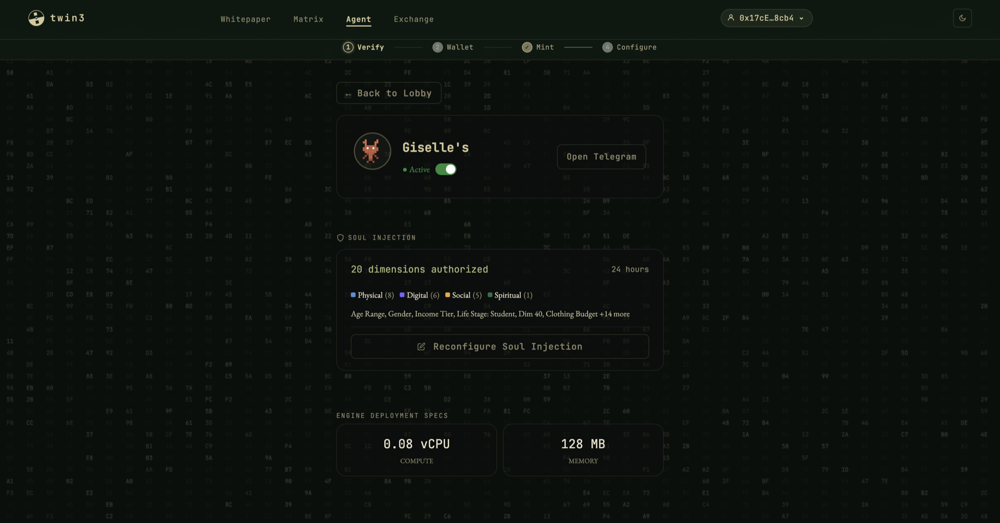
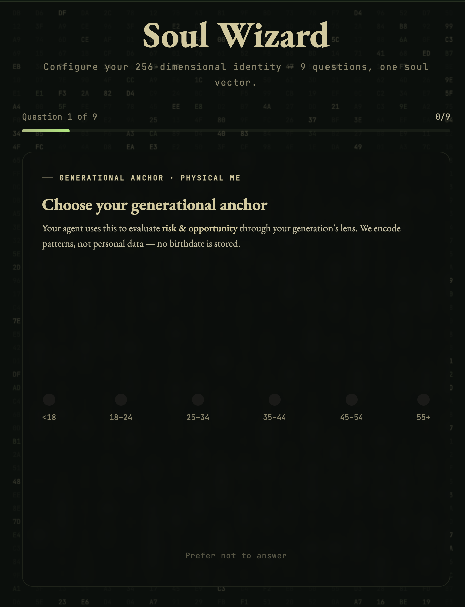
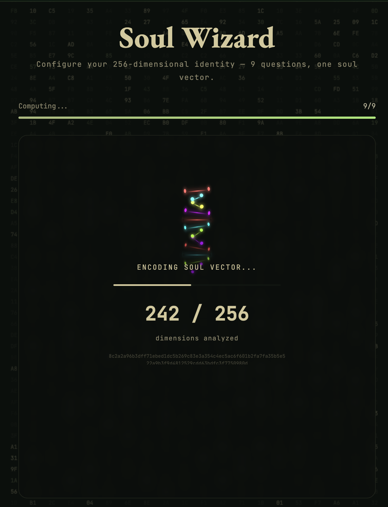

How do we design trust and transparency for AI-driven identity in a decentralized agent marketplace?
Product Architecture — twin3.ai
Build Your Digital Soul
Transform human identity into a 256-dimensional Twin Matrix — a Soulbound Token (ERC-4671) that permanently records who you are.
Soul Injection Protocol
Cryptographic binding (ERC-8004) links the Twin Matrix SBT to an AI agent — activating a Personal Agent that auto-updates as identity evolves.
The Agent Economy
Deploy specialised agents into the A2A marketplace — DeFi Trader, Social Assistant, RWA Trader — operating on your behalf 24/7 in Web 4.0.
Technical Stack
x402 Execution Layer
Agent micropayments · On-chain task settlement · Any agent can plug in
ERC-8004 Binding Protocol
Soul Injection · Agent–identity binding · Continuous update loop
ERC-4671 SBT Container
SOUL.md (256D vector) · MEMORY.md (history) · IDENTITY.md (cryptographic ownership)
How do you make on-chain authorization legible to someone who has never heard of a smart contract?
THE QUESTION THIS PROJECT ANSWERS
Twin3 operates in the emerging space of AI agents, decentralized identity, and human-controlled digital representation. The product is built around the idea that users should not simply be passively interpreted by AI systems — they should actively shape how their digital identity, preferences, and agent permissions are represented.
The project began as a 10-day Binance hackathon entry and evolved into a testnet product, community-tested prototype, and live mainnet product at twin3.ai.
In most AI and Web3 products, users trust complex systems without understanding what data is being used, how their identity is represented, or what an agent can do on their behalf.
No mental model for agent identity
Users cannot easily understand how an AI agent represents them or what it knows.
Abstract authorization flows
Permission flows are technical and difficult to verify, making users hesitant to engage.
Unclear identity boundaries
Systems lack clear separation between personal data, agent behavior, and on-chain permission.
Design a more transparent, user-controlled experience for AI-driven identity in a decentralized agent marketplace — making agent identity, data usage, and permission boundaries understandable without requiring users to know the full technical stack.
I led UX end-to-end: research, information architecture, user flows, interface design, and post-test iteration. I designed the Soul Wizard onboarding and the agent profile / permission screens independently, and collaborated with engineering on the Twin Matrix visualization and with the founding team on product positioning.
Hackathon prototype → testnet release → community-tested product → mainnet launch. Post-testing refinements addressed trust signals, authorization clarity, and information hierarchy.
How do users understand the role of an AI agent in representing their identity?
What information do users need before trusting or interacting with an agent?
How should the product explain authorization and data access without overwhelming users?
What makes an agent marketplace feel transparent, credible, and safe?
How can we balance Web3 technical accuracy with a more approachable user experience?
Hackathon phase relied on rapid competitive research and prototype iteration. Post-hackathon testnet release enabled structured community testing.
Recruited from the Twin3 community — a mix of Web3-native users and AI-interested users with limited decentralized infrastructure experience. This mix was intentional to test whether the product could serve both groups.
Agent identity needed a clearer mental model
Users understood the concept of an AI agent, but the relationship between agent, user, and underlying identity data needed to be more explicit.
Trust depended on visible permission boundaries
Users were more comfortable when the interface showed what an agent could and couldn't access, and whether permissions were active, limited, or revocable.
Web3 language created early friction
Terms like chains, tokens, and signatures were necessary but confusing when presented before users understood the product's core value.
Marketplace browsing needed both utility and credibility signals
Users wanted to evaluate ownership, purpose, permission scope, and reliability — not just agent capabilities.
Calm, infrastructural UI outperformed aggressive Web3 aesthetics
For an identity-related product, users responded better to a stable, minimal interface that communicated reliability.
No clear way to understand what differentiates one agent from another.
Uncertainty about what personal data an agent might access or store.
Lack of confidence before granting permissions or making authorization decisions.
No simple way to understand the relationship between identity, authorization, and marketplace interaction.
The system combined AI agents, identity verification, user-controlled data, permission tokens, and marketplace interaction. Without careful UX, these layers appeared as disconnected technical concepts. The challenge was not just exposing information — it was exposing the right level of information at the right moment.
How might we design an AI agent marketplace where users can understand, evaluate, and authorize agents with confidence — without needing to understand every technical layer behind the system?
Turn trust into a visible product experience. Instead of treating identity, permission, and agent behavior as hidden backend logic — make them understandable through structured information, progressive disclosure, clear status indicators, and user-controlled authorization flows.
Mapped across five stages to identify where users needed explanation, stronger hierarchy, or trust signals.
Discovery
User enters the marketplace and explores available AI agents.
Understanding
User reviews what an agent is, what it does, and how it represents identity.
Evaluation
User checks trust signals, ownership, permission scope, and use cases.
Authorization
User grants access or permission within a clearly defined scope.
Post-authorization
User monitors, modifies, or revokes access as needed.
Wizard Flow — Soul Injection Onboarding
Landing
Value prop · Hero · CTA to begin
Matrix Build
4 quadrant input · 256 DNA nodes
Injection
Bind SBT to agent · confirm scope
Authorisation
Grant access · set validity period
Monitor
Agent dashboard · modify or revoke
The product structure was organized around three core user questions:
What is this agent?
Why should I trust it?
What am I allowing it to do?
This hierarchy emphasized agent identity → function → trust status → authorization scope → action controls, reducing cognitive load in a technically complex product.
Focused on demonstrating the core concept and agent marketplace flow. Technically dense, little progressive disclosure.
Refined hierarchy, simplified language, improved visual consistency, made permission actions more explicit.
Alpha · Hackathon Build
Web3 terminology (SBT, ERC-8004) introduced before users understood the product's core value
Dense information layout; wizard step count and purpose were unclear mid-flow
Permission scope and validity periods not surfaced — users uncertain what they were authorizing
Visual system inconsistent across screens; component patterns not yet standardized
Refined · Post-testnet
Product value established first; technical concepts introduced progressively through the wizard
Step count visible, plain-language labels at each stage; each step's purpose clear mid-flow
Explicit scope labels and validity periods on authorization screen — users know exactly what they grant
Consistent light/dark system, unified typography and spacing — UI perceived as stable and credible
Clarity over technical completeness
Trust over visual excitement
User control over automation
Identity transparency over marketplace speed
An identity-first AI agent marketplace. Users can browse agents, understand what each agent represents, review trust and permission information, and interact under clearer authorization boundaries. The interface is calm, structured, and infrastructural — not a speculative Web3 aesthetic.
Agent identity profile
Clearer identity structure showing role, purpose, ownership, and trust signals.
Permission-aware interaction flow
Makes authorization explicit — users understand what an agent can access and under what conditions.
Marketplace browsing structure
Organized for comparison, exploration, and evaluation — not just listing.
Trust-oriented visual system
Soft contrast, neutral color, minimal noise — designed to convey stability over excitement.
User-controlled identity framing
Users are not passive data providers — they shape how their identity is represented and used.

Landing Page · My Role: UX Research, Interaction Design, Wizard Flow, Agent & Matrix Screens

Screen A — Matrix Dashboard · 256D Twin Matrix · 4-Quadrant Identity Overview

Screen B — Agent Settings · Temperature (Creativity) · Web Search Plugin · Long-term Memory
A 9-question onboarding flow that encodes the user's identity into 256 dimensions. Each question maps to one of four quadrants — Physical, Digital, Social, Spiritual Me — before the final Soul Vector is generated on-chain.
Step 1 — Choose Your Generational Anchor

Step 9 — Soul Vector Encoding Complete

Soul Wizard · 9 Questions → 256-Dimensional Identity Vector → On-Chain SBT
Released on testnet and invited community builders to test the product. 36 builders shared feedback between Apr 4–20, 2026, providing early qualitative signals on product clarity, trust, and onboarding.
Strong first impression from the visual system
Light/dark modes, animations, typography, and color validated the calm, non-speculative design direction.
"The UI is slick — love both light and dark modes. Onboarding pop-up flow is innovative and genuinely logical."
— Alpha builder, Apr 2026
Onboarding perceived as smooth and logical
Critical for a product that needs to introduce AI agents, identity, and decentralized verification without overwhelming first-time users.
"Smooth and easy from onboarding. Interface is intuitive, processing fast and stable, with strong scalability potential."
— Alpha builder, Apr 2026
Identity verification became a key trust signal
Testers responded to the human verification layer — it made the product's trust proposition understandable and meaningful.
"I like the identity + zkHumanity angle — feels like proving real human signal, not just a profile."
— Alpha builder, Apr 2026
Technical stability affected perceived credibility
Low latency and stability on testnet directly influenced whether the product felt experimental or trustworthy.
"Testnet was very stable with impressively low latency, very rare at this early stage."
— Alpha builder, Apr 2026
Strengthened onboarding hierarchy
Users understand product concept before encountering Web3 terminology.
Made identity signals more visible
Verification and credibility indicators surfaced earlier in the evaluation flow.
Polished interface system
Light/dark consistency, typography, spacing, and interaction feedback refined before mainnet launch.
In testing with 36 alpha testers, participants could understand agent role and permission boundaries more clearly — several testers specifically called out the onboarding flow, permission framing, and visual hierarchy. The biggest improvement was conceptual clarity, not just visual polish.
Design work bridged complex technical architecture and user-facing product — supporting testnet validation with feedback from 36 alpha testers drawn from a 6,000-member community, through to the mainnet launch at twin3.ai.
Designed the Soul Wizard onboarding flow and agent profile / permission screens, focusing on how users understand agent roles, permissions, and control. Collaborated with engineering on the Twin Matrix visualization and with the founding team on product positioning.
AI and Web3 products often fail not because the technology is weak, but because the UX doesn't explain responsibility, permission, and trust clearly enough.
Designing for AI agents requires designing mental models — not just screens. Who does the agent represent? What can it do? What data can it access? How does the user stay in control?
Testing with users outside the existing community
Measuring task success and comprehension more systematically
Improving permission management and revocation flows
Designing transparent agent reputation indicators
Introduce user testing earlier in the hackathon phase. With a product combining AI agents, identity, and Web3 authorization, earlier concept testing would have surfaced confusing mental models sooner.
Separate technical education from core product flow more clearly. Users need enough context to trust the system — but should not need to understand the full technical architecture before taking a first meaningful action.
This project shows my ability to work at the intersection of product strategy, UX research, and interface design in a technically complex domain.
My approach is not only about making products easier to use — it's about making invisible systems more understandable. Good UX should not hide complexity completely. It should structure complexity so users can make informed decisions with confidence.